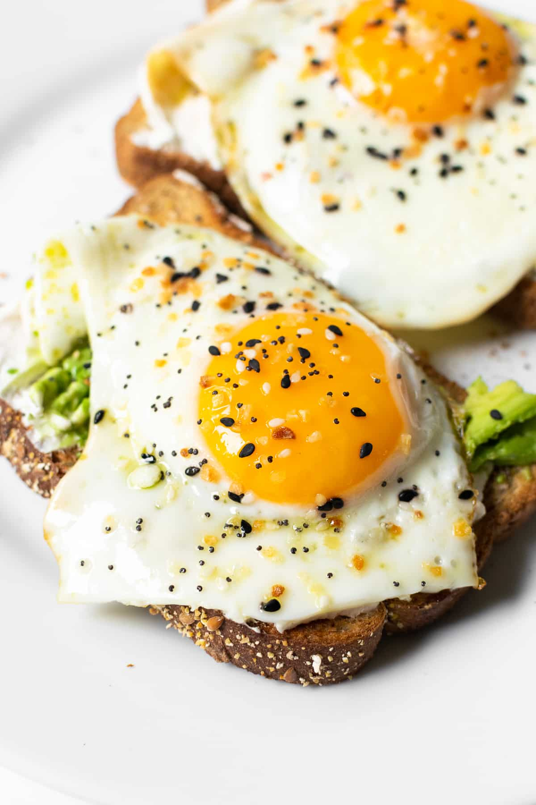

s
Avocado Toast With Egg

Description
Avocados are great, and eggs are great. What better combination is there than avocado toast with an egg? This recipe is quick and it provides a perfect amount of calories to start the morning right.
Ingredients
- Egg
- Avocado
- Bacon
- Diced onion (optional)
- Bread of your choice
- Pinch of lemon juice
- Salt to taste
- Pepper to taste
- Paprika to taste
- Sesame seeds for garnish
- Sriracha (optional)
Steps
- First, we are going to cook the bacon. You can either fry it, or bake it in the oven. I find baking it to be less messy.
- After cooking the bacon, place it on a plate with a paper towel to absorb the oil.
- Next, we are going to make the avocado spread. We are going to cut open an avocado and scrape the insides into a bowl.
- From there, we will go ahead and add our salt, pepper, crushed red pepper, and lemon juice to taste. We can also add diced onion at this point to add some texture.
- Next, we can either use a knife to cut the bacon, or simply crush it into our hands and add to the avocado mixture. Stir.
- Set the mixture aside, and we will begin with the egg. I prefer it over medium, but you can cook it to whatever doneness you prefer. I find over easy to be too messy in a sandwich/on toast.
- Set your range to about medium low/medium. Let it heat for a few minutes. Once you can splash a drop of water on it and it evaporates, it is ready for oil.
- Crack an egg into the pan. Once the bottom of it is cooked, instead of flipping, add a tbsp or so of water to the pan and put a lid on there. This helps to cook the top of the egg without having to flip.
I tend to accidentally break the egg yolk if I attempt to flip it.
- Let the egg(s) steam for about a minute or so. Now is a good time to toast your bread.
- Once you have toasted the bread, spread the avocado spread on there. By this time, the eggs should be ready. Place the egg on top.
- At this point, I like to sprinkle some pepper, salt, and paprika on the egg. I then top it off with Sriracha.
Return to Home